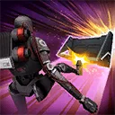

KX Security Droid
Play as Imperial Security Bureau's Enforcer, who makes sure all tasks are performed optimally
Play as Imperial Security Bureau's Enforcer, who makes sure all tasks are performed optimally
Deal Physical Damage to the target enemy and gain a stack of Overcharge (max 5), and recover 20% Health and Protection per stack of Overcharge. During his turn, if he has 5 stacks of Overcharge, Shock the enemy for 1 turn, which can't be resisted, and remove all Overcharge stacks.

KX Security Droid gains Offense equal to 200% of his Defense for 1 turn. Deal Physical damage to all enemies and KX gains Defense Up and Taunts for 2 turns. If all allies are ISB, also gain Alert and Protection Up (100%) for 2 turns. Other ally ISB Droids take 5% Max Health damage that ignores Protection.
- If KX Security Droid is Rank 2 or above, call him to assist.
- If he is Rank 3, Stagger the target enemy for 1 turn.
At the start of battle, KX Security Droid gains 15% Max Health for each ISB ally until the end of battle. Whenever KX gains 5 stacks of Overcharge, he gains Max Health (10%, stacking) until the end of battle.
If KX damages a Target Locked enemy, Expose them for 2 turns. If KX is critically hit, he gains a stack of Overcharge and inflicts Defense Down on the attacking enemy for 2 turns. Whenever an ISB Droid ally is defeated, KX gains Frenzy for 2 turns and a stack of Endure for the rest of the encounter.
Whenever an Undermined ally is damaged, Taunt for 1 turn, and whenever KX is Undermined, he gains Protection Up (25%, stacking) for the rest of the encounter.
Omicron Boost : While in Territory Wars, if all allies are ISB: At the start of battle, KX gains Retribution for 1 turn, Taunts for 3 turns, and immunity to Daze, and all allies have +50% Max Health and Max Protection until the end of battle.
Whenever KX gains Rank 3, he can no longer lose rank. Whenever KX attacks out of turn, he gains 5% Max Health (stacking) until the end of battle, and all allies gain 5% Turn Meter.
Whenever an ISB ally uses a Special ability, KX assists.
Whenever KX uses his ability Please Do Not Resist and has more than 3 stacks of Overcharge, he gains Foresight for 2 turns. If he has 5 stacks of Overcharge, also Blind all enemies for 2 turns.
Whenever IPD uses Self Destruct, all allies gain Endure for 2 turns, which can't be dispelled, they recover 100% Protection, and the cooldown of KX's ability, Please Do Not Resist is reset.

At the start of the battle, KX Security Droid gains Rank 1. Whenever KX Security Droid attacks out of turn while Taunting, he gains a Rank. Whenever Taunt is dispelled, KX Security Droid loses a Rank.
- While KX is Rank 2 or above, his Basic ability deals an additional 10% True damage based on his Max Health.
- While KX is Rank 3, he has a 100% counter chance.